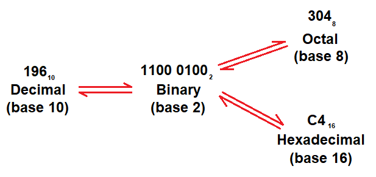
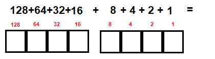
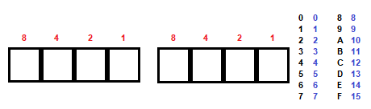
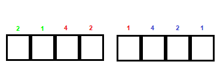

Homework 9 - Digital representation of data
This homework will be used to learn about digital representation of numbers. Computers are not like humans. They don't use the same number system we do. By the end of this homework you wil understand why and you will have ample opportunity to pracice converting between binary, decimal, octal, and hexadecimal.

There are ways to convert directly from any base to any other, but you don't need to learn them. If you ever need to move from base 29 to base 7, you can use them. In the computer world, we only need to handle three kinds of conversions. Once you learn how to go back and forth between the three bases, you are good to go.
-
Let's start with a video to learn a little bit (see what I did there?) about why we have binary. Watch the video to get a quick introduction.
-
Converting between binary and decimal is pretty simple. It starts with knowing the binary numbers. Just like the place values for decimal numbers, binary numbers have place values. They start on the right with a 1 and double as you move to the left.

If you are converting from binary to decimal, put in the digits. Erase the zeros; keep the ones. Add the numbers.
If you are converting from decimal to binary, subtract each of the numbers from biggest to smallest. If one of the numbers is too big (like you can't subtract 27-32 because it would be negative), just skip it. Then put ones into the places where you subtracted.
-
Converting between binary and hexidecimal is the easiest. If you can do decimal-binary conversions, you can do this, too. Every 4 bits (called a "nibble") converts into a hex digit. Just convert the 8-4-2-1 values like you did with binary-to-decimal. The one hiccup is that there are sixteen digits. We only use ten, so people have chosen A, B, C, D, E, and F to represent the digit values 10 through 15.

If you are converting from binary to hex, put in the digits. Convert each nibble. Look up the hex digit for that value.
If you are converting from hex to binary, look up the digit value and then convert each nibble.
-
Converting between binary and octal is also pretty simple. For historical reasons, programmers needed 3 bit numbers. These are values 0 through 7, so we don't need any new digits. We just don't use all the ones we do know. Convert each 4-2-1 value one at a time. DON'T BE CONFUSED. There are only 8 bits, not 9, but the last two bits still work the same way.

If you are converting from binary to octal, put in the digits. Convert each 3-bit sequence.
If you are converting from octal to binary, convert each 3-bit sequence.
-
If you need to convert between two of the bases not discussed above, you need to go through binary. Hex to binary to decimal. Decimal to binary to octal. Octal to binary to hex. Just go through binary. That's it. Just three conversions.
-
If you still don't get it there are lots of ways to practice. Every computer has a built in calculator with a programming option. You can type in a number in any of these bases and it will show you all the other bases, too. Apart from that you can find MANY videos on the internet (like this one). Tons. You are welcome to use any technique you want, but you will need to convert from any base to any other base in the exam.
-
Work out the conversions below and submit your METHOD along with the answers to Canvas.
10810 → ???8
21510 → ???2
9310 → ???16
A716 → ???8
7816 → ???2
2F16 → ???10
1148 → ???10
1438 → ???16
3418 → ???2
1011 00112 → ???8
0010 10102 → ???16
0100 11012 → ???10